13/06/2020 — Quá liều thuốc kèm một rối loạn nhịp hấp dẫn
Bản dịch tiếng Việt của bài "Drug Overdose with a Fascinating Arrhythmia" – Dr. Smith’s ECG Blog. Giữ nguyên toàn bộ 13 hình ảnh của bản gốc.
===================================
BÌNH LUẬN CỦA TÔI, bởi KEN GRAUER, MD (13/6/2020):
===================================
Ca hôm nay xem lại một rối loạn nhịp hấp dẫn mà Dr. Smith đăng lần đầu vào ngày 10 tháng Sáu năm 2011. Bệnh nhân đến khoa cấp cứu (ED) sau khi quá liều thuốc oxcarbazepine. Dù không có thêm chi tiết nào khác về ca bệnh — chúng ta sẽ giả định bệnh nhân ổn định huyết động vào thời điểm ghi điện tâm đồ ở Hình 1.
- Nhịp tim ở Hình 1 là gì?
- Có blốc nhĩ thất (blốc AV) không?
- Bạn sẽ tiến hành đánh giá rối loạn nhịp này NHƯ THẾ NÀO?
- Xét bối cảnh lâm sàng (tức là một ca quá liều thuốc) — bạn sẽ xử trí bệnh nhân này NHƯ THẾ NÀO?

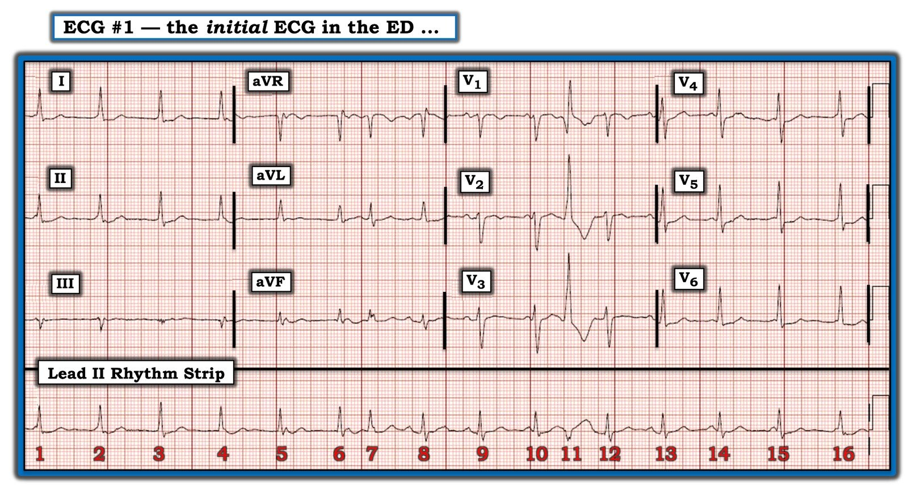
SUY NGHĨ CỦA TÔI về điện tâm đồ #1: Đây là một điện tâm đồ cực kỳ khó. Nhằm minh họa một cách tiếp cận khi đọc rối loạn nhịp phức tạp — tôi nghĩ mình sẽ đi qua Quy trình Từng bước một mà tôi đã dùng để đánh giá bản ghi này.
Có 5 Thông số MẤU CHỐT cần đánh giá khi xem xét bất kỳ rối loạn nhịp nào. Tôi thích nhớ chúng qua câu: “Hãy để ý các P và Q, và 3 chữ R”:
- Có sóng P không? — hoặc, nếu không có sóng P rõ, thì có dấu hiệu của hoạt động nhĩ không (như “sóng rung” hoặc cuồng nhĩ)?
- QRS có rộng không? — chúng ta chấp nhận mọi QRS có thời gian lớn hơn nửa ô lớn (tức là >0,10 giây) là QRS “rộng”.
Và 3 chữ R:
- Rate (tần số)? — Tần số thất (và tần số nhĩ) là bao nhiêu?
- Regularity (tính đều)? — Nhịp thất (và nhịp nhĩ) có đều không?
- Related (liên quan)? — Có mối liên quan cụ thể nào giữa các phức bộ QRS và hoạt động nhĩ lân cận không?
Đánh giá P, Q và 3 chữ R theo thứ tự nào không quan trọng, và tôi thường thay đổi thứ tự tùy theo hoạt động nhĩ, độ rộng QRS và/hoặc tính đều của nhịp — yếu tố nào dễ đánh giá nhất đối với nhịp đang xem.
- ĐIỂM THEN CHỐT (PEARL) #1 — Khi áp dụng cách tiếp cận 5 Thông số — tôi thích bắt đầu bằng việc đánh dấu sóng P. Nhất là với một rối loạn nhịp phức tạp hơn — chỉ một thao tác đơn giản là đánh dấu sóng P cũng có thể giúp ích rất nhiều trong việc tập trung chú ý khi đánh giá mối liên quan (nếu có) giữa sóng P và các phức bộ QRS lân cận (các mũi tên ĐỎ trong Hình 2).
- ĐIỂM THEN CHỐT (PEARL) #2 — Đánh giá sự hiện diện và bản chất của hoạt động nhĩ. Bước thiết yếu này trở nên dễ dàng hơn rất nhiều nhờ: i) Dùng compa đo (calipers); và, ii) Xem các chuyển đạo ghi đồng thời. Một số sóng P ở Hình 2 thì rõ ràng — nhưng số khác thì không. Dù vậy — Cái thường gặp thì thường gặp! Khả năng có một nhịp xoang nền đều (hoặc gần đều) (có thể “dò bước” bằng compa đo) là cao hơn nhiều — so với khả năng sóng P đều phần lớn thời gian nhưng thỉnh thoảng bị “bỏ” sóng P do blốc đường ra nút xoang. Các mũi tên XANH ở nhiều chuyển đạo ghi đồng thời trong Hình 2 làm nổi bật các sóng lệch, xác nhận rằng mọi mũi tên ĐỎ đều đặt trên sóng P xoang, nhiều sóng trong số đó bị che khuất một phần vì trùng với (làm biến dạng) phần đầu hoặc phần cuối của phức bộ QRS. Và, mũi tên ĐỎ mà chúng tôi đặt trên phần cuối sóng T của nhát #11 ở chuyển đạo II dài quả thật chỉ vào một khía tinh tế trên sóng T, tương ứng với một khía rõ ràng trên sóng T của nhát #11 ở chuyển đạo V1 (mũi tên XANH dọc dài nhất). Như vậy, chúng ta đã xác nhận rằng nhịp xoang đều tiếp diễn suốt dải nhịp chuyển đạo II dài ở Hình 2.
- Giờ đã xác định được sóng P — chúng ta cần tiếp tục đánh giá 4 Thông số còn lại: i) Với 1 ngoại lệ ( = nhát #11) — phức bộ QRS hẹp; ii) Một số đoạn của nhịp ở Hình 2 trông Regular (đều)— nhưng các đoạn khác thì không; iii) Rate (tần số) thất ở những đoạn trông khá đều là ~80-85/phút; và, iv) Relationship (mối liên quan) giữa sóng P và các phức bộ QRS lân cận rất phức tạp — và cần được đánh giá kỹ hơn (xem bên dưới).

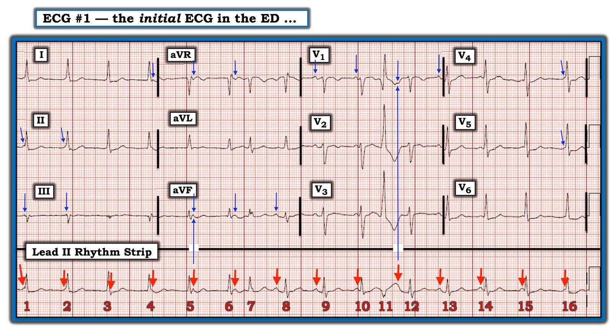
ĐIỂM THEN CHỐT (PEARL) #3 — Hãy bắt đầu với những gì bạn biết! Ngay cả các rối loạn nhịp phức tạp thường cũng có cả những phần dễ và những phần khó đọc hơn. Hãy bắt đầu với những phần dễ hơn!
- Nhát #11 đến sớm hơn dự kiến. Nhát này rộng — trông rất khác hầu như mọi phức bộ QRS khác — và không có sóng P đi trước. Vì vậy, nhát #11 là một PVC.
- “Phần dễ hơn” khác để đọc trên bản ghi này — là nhận ra rằng khoảng PR quá ngắn để dẫn truyền được nhiều nhát trên bản ghi này. Ví dụ — KHÔNG đời nào khoảng PR đi trước các nhát #1, 2, 10, 14, 15 và 16 lại có thể dẫn truyền được!
- Cũng KHÔNG đời nào các nhát #3, 4, 5 và 6 là nhát được dẫn truyền — vì sóng P xoang (mũi tên ĐỎ) xuất hiện trong hoặc sau phức bộ QRS ở từng nhát này.
ĐIỂM THEN CHỐT (PEARL) #4 — Hãy xem có nhát nào dẫn truyền từ xoang không? Thường thì điều này dễ xác định — nhưng ở Hình 2 thì chẳng dễ chút nào! Như Dr. K. Wang đã nhấn mạnh trong bài bình luận năm 2011 về bản ghi này — nhát #8 nắm MẤU CHỐT để đọc rối loạn nhịp này.
- Lý do chúng ta rất nghi ngờ rằng nhát #8 đang được dẫn truyền — là vì khoảng PR dài nhất trên bản ghi này đi trước nhát này.
- Chúng ta nghi ngờ rằng nhát #13 cũng được dẫn truyền — vì khoảng PR đi trước nó bằng khoảng PR đi trước nhát #8.
- Ngược lại — khoảng PR đi trước nhát #9 ngắn hơn một chút — nên nhát #9 có lẽ không được dẫn truyền.
- Như vậy, mọi nhát ở Hình 2 đều đã được lý giải — ngoại trừ nhát #7 và 12 — mà chúng ta để dành cho sau vì đánh giá 2 nhát này thuộc về “những phần khó hơn” của bản ghi này.
Tổng hợp lại tất cả:
- Điều chúng ta đã xác lập được cho đến lúc này — là ngoại trừ 1 PVC (tức là nhát #11) — nhịp ở Hình 2 là nhịp trên thất (QRS hẹp) và khá đều — nhưng phần lớn sóng P xoang đều hiện có lại không được dẫn truyền.
- Vì những nhát không được dẫn truyền có phức bộ QRS hẹp trông giống hệt các nhát dẫn truyền từ xoang #8 và 13 — điều này có nghĩa là các nhát không được dẫn truyền hẳn phải xuất phát từ nút AV. Và vì tần số của các nhát không được dẫn truyền này là ~80-85/phút — điều này có nghĩa là trong một phần thời gian, có một nhịp bộ nối gia tốc ở Hình 2 (tần số ~80-85/phút cao hơn hẳn khoảng tần số 40-60/phút thông thường của nhịp “thoát” bộ nối).
- Cuối cùng — việc có một nhịp sóng P xoang đều nền, với nhiều sóng P xoang không liên quan đến các phức bộ QRS lân cận — xác định sự hiện diện của phân ly nhĩ thất (AV Dissociation).
ĐIỂM THEN CHỐT (PEARL) #5 — Như đã nhấn mạnh trong bài ngày 24 tháng Năm năm 2020 — bản thân phân ly nhĩ thất không bao giờ là một “chẩn đoán”. Thay vào đó — đó là một tình trạng do “một điều gì khác” gây ra. 3 Nguyên nhân của phân ly nhĩ thất là: i) Blốc AV (độ 2 hoặc độ 3); ii) Phân ly nhĩ thất do “chiếm quyền” (usurpation) — trong đó sóng P tạm thời không dẫn truyền vì một nhịp bộ nối gia tốc chiếm ưu thế (tức là “chiếm quyền” kiểm soát nhịp); và, iii) Phân ly nhĩ thất do “mặc định” (default) — trong đó một nhịp thoát bộ nối chiếm ưu thế theo “mặc định” (tức là do nút SA chậm lại) — như có thể xảy ra khi đang dùng một thuốc như thuốc chẹn ß. Ở Hình 2:
- Không sóng P nào trong số những sóng P không dẫn truyền có cơ hội để dẫn truyền — vì khoảng PR hoặc quá ngắn để dẫn truyền — hoặc sóng P xuất hiện trong hay ngay sau phức bộ QRS. Do đó — mặc dù phần lớn sóng P trong Hình 2 không dẫn truyền — vẫn không có bằng chứng nào về bất kỳ mức độ blốc AV nào.
- Tần số sóng P xoang (các mũi tên ĐỎ) trong Hình 2 là ~80/phút. Vì đây là tần số xoang bình thường — đây không thể là phân ly nhĩ thất do “mặc định” (default).
- Thay vào đó — nguyên nhân gây phân ly nhĩ thất trong Hình 2 chắc chắn phải là phân ly nhĩ thất do “chiếm quyền” (usurpation) — xảy ra ở đây vì một nhịp bộ nối gia tốc từng lúc vượt quá tần số của ổ tạo nhịp xoang.
- Điểm MẤU CHỐT về các hàm ý lâm sàng của nhịp này: Việc nhận ra rằng không có blốc AV trong Hình 2 — và rằng nguyên nhân gây phân ly nhĩ thất là một nhịp bộ nối gia tốc, có những hàm ý lâm sàng quan trọng. Dù chúng ta không biết chi tiết của ca này — có vẻ như một nhịp bộ nối gia tốc sẽ không phải là điều bất ngờ khi đi kèm với ngộ độc thuốc. Rất có khả năng nhịp bộ nối gia tốc (và tình trạng phân ly nhĩ thất do nó gây ra) sẽ tự hết khi tình trạng lâm sàng của bệnh nhân cải thiện. Khác với phân ly nhĩ thất do blốc AV độ 2 hoặc độ 3 — nhịp trong Hình 2 nhiều khả năng sẽ KHÔNG cần điều trị đặc hiệu nào.
ĐIỂM THEN CHỐT (PEARL) #6 (Vượt ra ngoài phần cốt lõi): Như đã bàn trong bài đăng ngày 24 tháng Năm năm 2020 — có một dạng phân ly nhĩ thất đặc biệt gọi là phân ly nhĩ thất “đồng nhịp” (isorhythmic) — trong đó tần số sóng P xoang gần như bằng tần số của ổ bộ nối gia tốc. Một đặc điểm của rối loạn nhịp độc đáo này — là thường có sự thay đổi “qua lại” về tần số của 2 ổ tạo nhịp cạnh tranh. Chúng ta thấy hiện tượng này trong Hình 2.
ĐIỂM THEN CHỐT (PEARL) #7 — Đừng quên đọc phần còn lại của điện tâm đồ 12 chuyển đạo! Một sai lầm thường gặp sau khi phân tích xong một rối loạn nhịp phức tạp là quên xem xét phần còn lại của bản ghi 12 chuyển đạo (Hình 2).
- Như đã nêu ở trên — có 1 PVC trên bản ghi này (nhát #11) — có một vài nhát dẫn truyền từ xoang — và có phân ly nhĩ thất do nhịp bộ nối gia tốc trong phần lớn bản ghi. Chúng ta vẫn có thể đánh giá hình thái QRST khi nhịp là nhịp bộ nối.
- Khoảng QTc bình thường. Trục mặt phẳng trán bình thường, ở +20 độ. Không có lớn buồng tim. Không có sóng Q. Tăng tiến sóng R bình thường (vùng chuyển tiếp nằm giữa chuyển đạo V3 và V4). Có các bất thường ST-T không đặc hiệu (tức là sóng T đảo ngược ở chuyển đạo V1,V2 + ST dẹt kèm ST chênh xuống nhẹ, đặc biệt ở các chuyển đạo bên). Các thay đổi ST-T này trông không có vẻ cấp tính — và tôi nghĩ chúng sẽ hết khi tần số bộ nối chậm lại và tình trạng lâm sàng của bệnh nhân cải thiện.
VƯỢT RA NGOÀI PHẦN CỐT LÕI về nhịp tim này: Phần bàn luận ở trên đi theo quá trình suy nghĩ từng bước của tôi khi đánh giá nhịp tim trong Hình 2. Dù vậy — vẫn còn một số dấu hiệu chưa được giải thích …
- LƯU Ý: Mặc dù phần mô tả “quá trình suy nghĩ” của tôi ở trên có vẻ dài — Thực tế tôi chỉ mất chưa tới 1 phút trong “thời gian thực” để rút ra các kết luận trên.
- ĐỀ XUẤT khi xem các giản đồ bậc thang tiếp theo: Cách TỐT NHẤT để giải thích các chi tiết tinh tế còn lại của rối loạn nhịp này là dựng tuần tự một giản đồ bậc thang (laddergram). Với 10 Hình tiếp theo — bạn sẽ thấy các giản đồ bậc thang này chồng lên nhau. Xem tốt nhất là trên máy tính. BẤM vào Hình 3 để phóng to — rồi bấm phím Mũi tên tiến trên bàn phím để xem giản đồ bậc thang được dựng tuần tự. Phần mới nhất được thêm vào ở mỗi bước có màu XANH. Các chú thích giải thích quá trình suy nghĩ của tôi. Bất kể kinh nghiệm dùng giản đồ bậc thang trước đây của bạn ra sao — tôi cá là bạn sẽ hiểu rõ hơn nhiều điều đang diễn ra sau khi xem tuần tự 10 Hình tiếp theo này!
Bắt đầu với Hình 3:

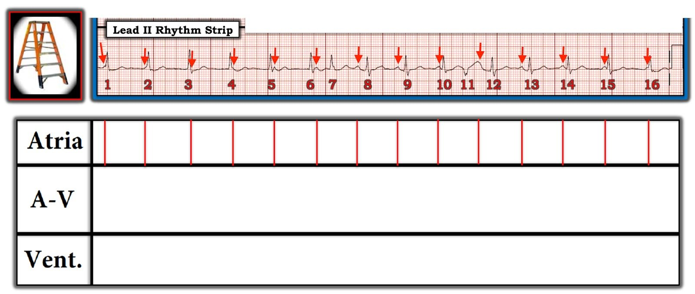

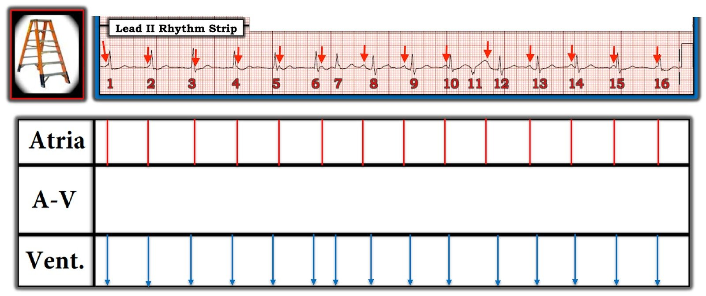

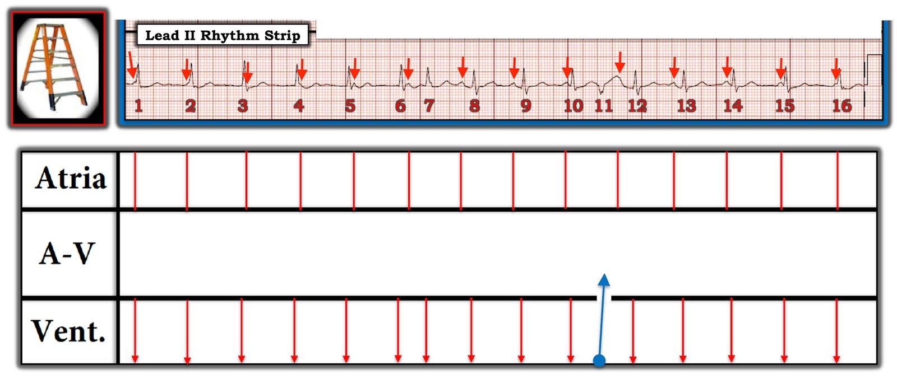

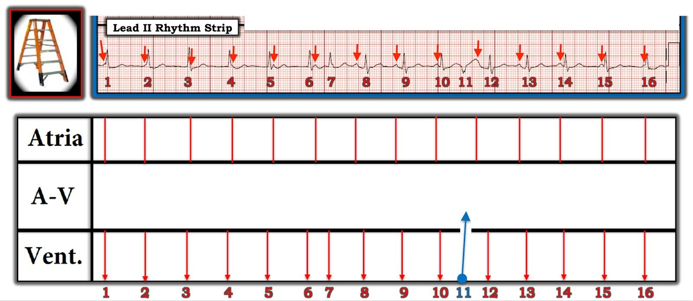

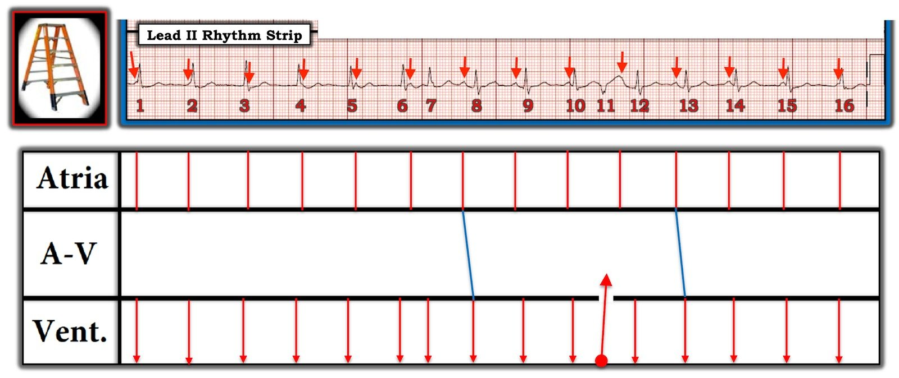

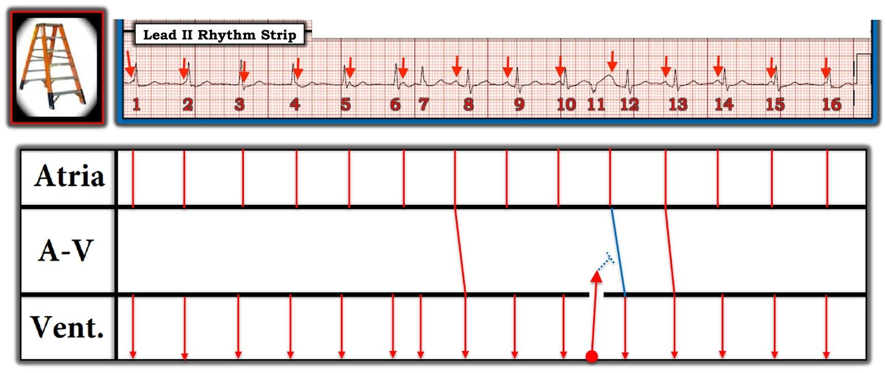

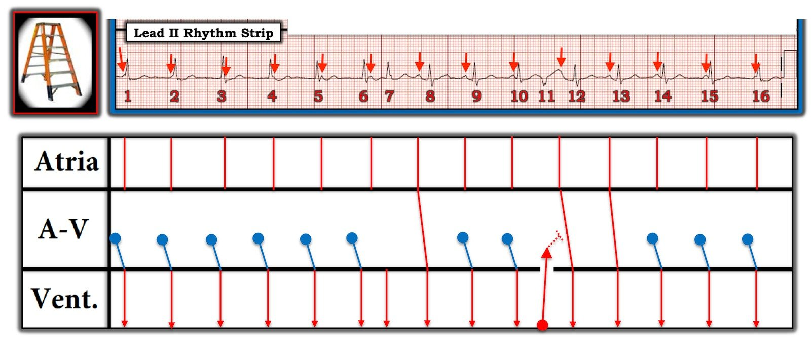

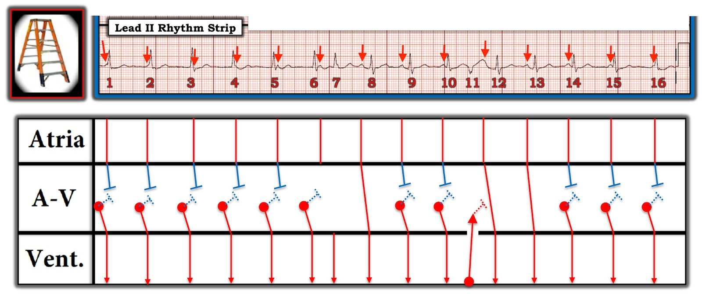

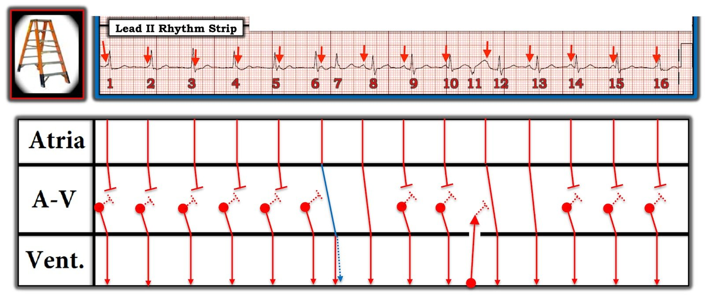

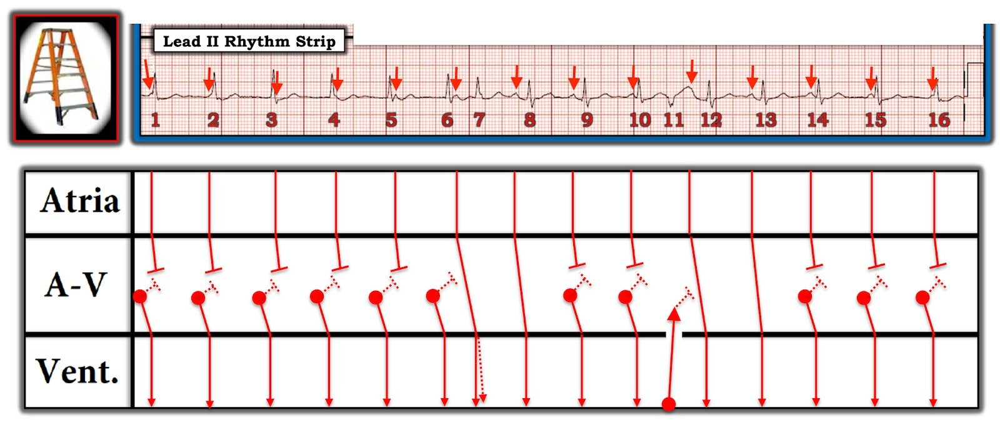